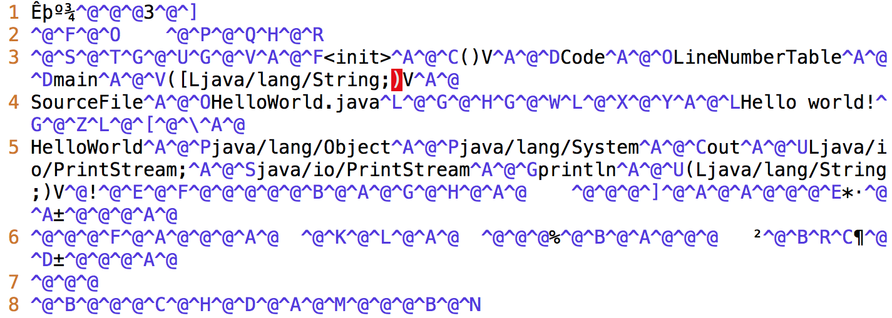
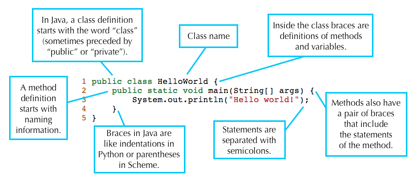
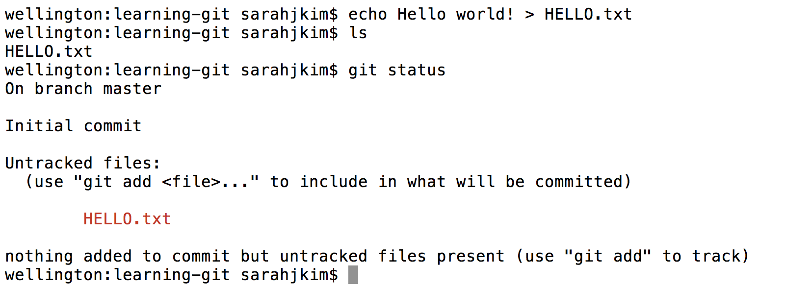
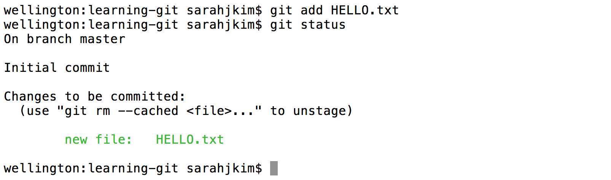
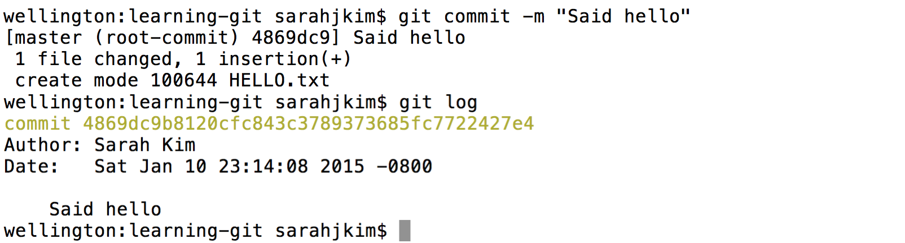
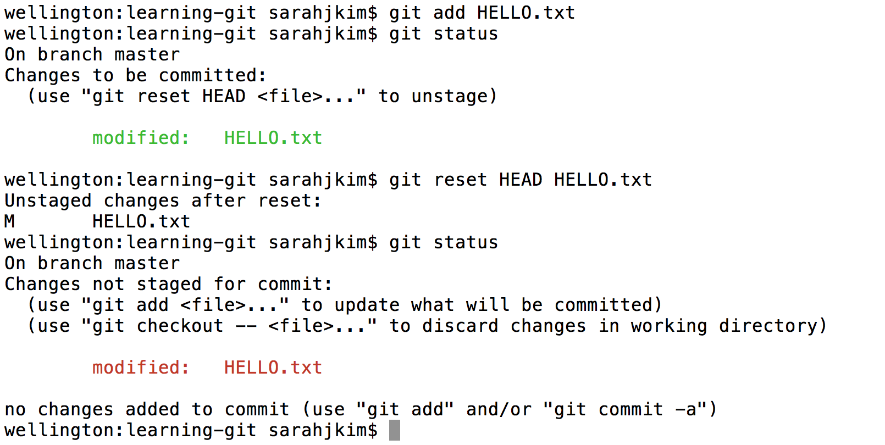
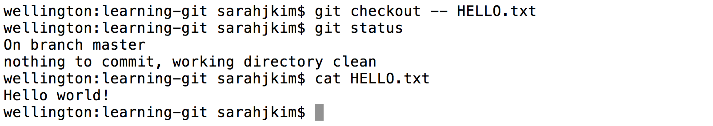

Before You Begin
- If you haven't signed up to receive an instructional account, follow the instructions here.
- If you plan on using your own computer for this course, you should check out lab1b to set up everything you'll need for the semester.
- Once you have an instructional account, complete the first two sections in the instructional accounts guide. It is especially important for you to register your account (see section one).
- Be aware that there are a large number of setup steps this first week. Don't be discouraged, and make sure to ask for help if you're stuck! The best place to ask for help is in the actual lab.
- Project 0 will allow pair-partnerships subject to these rules. Lab might be a good place to meet a partner — but make sure you both have the same Java background and are willing to work together in the same room (see partnership rules for details)!
For those of you who have been working ahead, do not use IntelliJ (from lab 2) today. For today's lab, please work from the command line to compile and run your code.
A. Java Compilation & Development
Java 1.8 is currently installed on the instructional machines. You may need to install it on your personal computer. You can find instructions to do this in lab1b.
Java Is Compiled
Java is a compiled language rather than an interpreted language (like Python or Scheme). When code written in an interpreted language is run, an interpreter program translates the code into actions that the computer executes. In contrast, a compiled language must first use a compiler to translate the code. Only afterwards can the computer run the resulting compiled code, either directly on the computer, or in Java's case, on an interpreter called the Java virtual machine.
Let's see an example. Here is the Hello World program in Java. Don't worry about understanding it now - we'll deconstruct it later in this lab.
public class HelloWorld {
public static void main(String[] args) {
System.out.println("Hello world!");
}
}Here is what the corresponding compiled Java code (called bytecode) looks like. The Java virtual machine can interpret this to run the program.

Why Compilation?
At this point, you may be wondering why Java is compiled. Compilers are quite helpful for several reasons:
Compilers can check for errors prior to runtime. The Java compiler will catch and report errors like:
- type errors, which can be produced by giving methods the wrong
objects as parameters (like a
Stringinstead of aint) - syntax errors, which can be caused by forgetting syntactical elements like parentheses or braces
Catching these and many other types of errors prior to runtime help catch many of the possible bugs caused by programmer error and make Java programs more stable before they are run.
- type errors, which can be produced by giving methods the wrong
objects as parameters (like a
- Compilers can help speed up programs. Programs written in interpreted languages can be slow because each time the interpreted program is run, interpreters must parse the human-readable text and translate it into instructions that can be directly understood by the machine. The compiler does this translation work once and saves the instructions to a file called a binary. Each time we run the binary, the machine simply re-reads the instructions directly, saving time and work.
- Compilers can verify access rights to classes and methods. Java has a lot of built-in security because access rights can be assigned to each class and method. Special keywords called access modifiers limit what other classes and methods have access to. The compiler checks that every program that uses a class or calls a method has the correct access rights to use or call it. You will learn more about this later in the course.
There are many other reasons why some languages use compilers, but for now, you will just need to know how to compile and run your Java programs.
Compiling Java Programs
There are many different Java compilers,
but we'll be using javac for command line in this class.
javac is included in Oracle's Java Development Kit (JDK), so you can set it up
on your own computer if you'd like. It's also pre-installed on the lab machines.
Let's pretend you have a Java file called FranceSimulator.java. To compile FranceSimulator.java, you
would type the following command into your terminal:
$ javac FranceSimulator.javaRunning Java Programs
Compiling your program using the command above should generate .class files. For example, let's pretend that you've compiled FranceSimulator.java. This would generate a new file called
FranceSimulator.class.
If you were to open this .class file in a text editor, you'd see something like the bytecode in the
image earlier in this lab. Instead, you'll typically use the Java bytecode interpreter to run the class file. We could invoke the Java bytecode interpreter on our new class file by typing the following command in a terminal:
$ java FranceSimulatorThis would begin execution of the program. Note that you do not type FranceSimulator.class. That is a common mistake that will
cause an error message like this:
Error: Could not find or load main classExercise: Compiling & Running Hello World
Using your favorite text editor, create a new Java file called HelloWorld.java and type in the HelloWorld
program below.
public class HelloWorld {
public static void main(String[] args) {
System.out.println("Hello world!");
}
}When you're done, compile and run it using the following commands:
$ javac HelloWorld.java
$ java HelloWorldYou should see Hello world! printed out in your terminal.
A Note on IDEs
An IDE (integrated development environment) is a program that can be used to write and run programs without using command line. They provide useful features like debugging and are popular tools for programmers to write and test their code. There exist many popular IDEs for Java such as:
We will learn more about IDEs in Lab 2.
IMPORTANT: The course staff will only officially be supporting IntelliJ. If you want to use a different IDE, the course staff may be unable to offer assistance.
B. Writing Java Programs
Java Is Object-Oriented
Java is an object-oriented programming (OOP) language. What this means is that you'll want to think of your programs in terms of objects that you can maninpulate and how these objects will interact with each other. If you've never seen Java before, this will seem a little overwhelming at first, but it'll all make sense after project 0.
Format of a Java Program
Every Java file contains a class, interface, or enum. For now, let's just discuss class definitions. A class definition provides the name of the class and serves as a template of an object. In addition, a class definition contains methods that define the behavior for a particular class and variables that help to define this behavior.
Here is a deconstruction of the aforementioned "Hello World" program:

A Java program consists of a collection of one of more of these Java files
containing classes, interfaces, or enums. At least one of the classes in a Java
program must contain a method called main. This main method is called in order
to run the program.
This is why running the HelloWorld program prints out Hello world!. The
main method in the HelloWorld class is being run when you type
java HelloWorld into the terminal.
Exercise: Leap-Year Program
For your next Java program, you'll be solving a small problem. We'll be writing a program that prints out whether or not a year is a leap year or not. A leap year is either:
- divisible by 400 or
- divisible by 4 and not by 100.
For example, 2000 and 2004 are leap years. 1900, 2003, and 2100 are not leap years.
Your Java file should be called LeapYear.java. These lines should go into the
main method of the LeapYear class. Remember that your class name should
match the name of your file. Your program should include the line:
int year = 2000;If you're not sure where to start, you can copy and paste lines from here — you may not need all the lines, and you may use lines multiple times.
Some Java Vocabulary in Leap Year
- The
%operator implements remainder. Thus, the value ofyear % 4will be 0, 1, 2, or 3. - The
!=operator compares two values for inequality. The code fragmentif (year % 4 != 0)reads as "if the remainder when dividingyearby 4 is not equal to 0." - The method
System.out.printlnprints its argument to "standard output" (which in this case is your terminal window) when called. - When one of the arguments of the
+operator is a string, the arguments are concatenated as strings. String concatenation is the operation of joining two character strings end-to-end.
Testing Leap Year
When you've arranged the lines properly and compiled successfully, running the program should print out the following line:
2000 is a leap year.You can test your program with other year values by changing the line
int year = 2000;to other integer values. Once your program is correct, save it as LeapYear.java.
Instructions on how to submit your work will be posted on Piazza shortly, so stay tuned!
Documentation and Comments in Java
Writing easy-to-understand code is one of the most important skills a programmer can have! We encourage
you to write code that is self-documenting by picking variable names and
function names that make it easy to know exactly what's going on! Don't name
your variables a, b, and your functions f, g, etc. Instead, give them nice descriptive names
like year or getUserName.
Sometimes variable and method names are not enough. For example, if you are implementing a complex algorithm, you may need to add comments to describe your code.
There are two formats for comments in a Java program:
Single-line comments start with two consecutive slash characters and continues to the end of the line:
// This is one kind of commentMulti-line comments start with
/*and end with*/:/* This is a multi-line comment */Some commenting styles add single asterisks at the start of each line in the comment after the first, to improve readability.
/* This is a * multi-line * comment */
C. Git and Local Repositories
Here it comes, the part of the lab that brings pain.
In 61B, you'll be required to use the git version control tool, which is wildly popular out in the real world. Unfortunately, the abstractions behind it are fairly tricky to understand, so it is likely that you will encounter significant frustration at some point as you learn to use git.
Before you proceed, read sections A-C of the Using Git Guide
Git Exercise
Now that you've read the first 3 sections of the git guide, you're now ready to start using Git! Follow along with Sarah's example below. If you typed out all the commands from the tofu example, you may skip this exercise.
... and if you'd like more of a challenge, read the direction for each step and guess what the command should be before looking at the screenshots/running the command.
And yes, Sarah's lovely computer is named wellington. Quite the classy name,
wouldn't you say?
Initialize a Git repository called
learning-git.
Add a file called
HELLO.txt.
Suppose we want to save the state of this file in git. First we stage it:

Now that we have staged
HELLO.txt, it will be included in our commit. Commit the file with a message of your choice.
Let's update our
HELLO.txt. Here I used a text editor called vim to add some text to the file, and a tool called cat to show the file to you in the screenshot. You can use any text editor of your choice.If we want to save the change we made in git, first we'll have to stage it. Stage it with the
addcommand. Then, suppose we decide we no longer like the change we made, and we don't want to save it in Git. Unstage the file with theresetcommand. Important: The reset command does NOT change the actual HELLO.txt file. In terms of our panorama analogy, it only deletes the picture we took of this file!
Now suppose we dislike the changes we made so much, we want to return the file to its state the last time we committed it — that is, before we added the extra lines. Discard your changes to
HELLO.txtsince your first commit with thecheckoutcommand. Here, instead of specifiying a commit ID, we'll use the — command, which uses the most recent commit by default.
It is important that you understand every step of this example. Please ask for help if you are confused about any step.
D. Git and Remote Repositories
We're now ready to finish off the lab. But first...
STOP! Before you proceed, read section D of the Using Git Guide.
In 61B, you'll be required to submit your code to your personal GitHub repository. This is for several reasons:
- To spare you the incredible agony of losing your files.
- To save you from the tremendous anguish of making unknown changes to your files that break everything.
- To ensure that we have easy access to your code so that we can help if you're stuck, and so that we can grade your code.
- To dissuade you from posting your solutions on the web in a public GitHub repository.
- To expose you to a realistic workflow that is common on every major project you'll ever work on again.
- To enable safer, more equitable partner collaborations.
Before beginning this section ensure that the name of your GitHub repository in the Berkeley-CS61B organization matches your instructional account login. If this is not true, please let your TA know.
Note: You'll need to perform this series of steps to set up your Git repo on each computer you use (e.g. instructional computer, personal computer). If you know that you'll only be using your personal computer, feel free to do this only on your personal computer (and not your lab account).
Clone your Berkeley-CS61B organization repository.
Navigate to the spot in your folders on your computer that you'd like to start your repository.
$ cd cs61bEnter the following command to clone your GitHub repo. Make sure to replace the
**with your own instructional account login/repo name.$ git clone https://github.com/Berkeley-CS61B/**.gitIf you'd like to SSH instead of HTTP (and set up your own SSH key), feel free to also do that instead. If you don't know what we're saying, then using https is fine. The advantage of SSH is that you won't have to type in your GitHub password every time you use your repository.
Move into your newly created repo! (Make sure you do this part, or the rest of the steps below will not work correctly.)
$ cd **
Add the
skeletonremote repository. You will pull from this remote repository to get starter code for assignments. (Make sure that you are within the newly created repository folder when the continue with these commands.)Enter the following command to add the
skeletonremote.$ git remote add skeleton https://github.com/Berkeley-CS61B/skeleton-sp16.gitListing the remotes should now show both the
originandskeletonremotes.$ git remote -v
Working on the Skeleton
You must now pull from the
skeletonremote in order to get the starter code for lab1. You will also do this when new projects and assignments are released. To do this, use the spookiest command in the whole git toolbox:$ git pull skeleton master
What this does is grab all remote files from the repo named skeleton (which is located at https://github.com/Berkeley-CS61B/skeleton-sp16.git), and copies them into your current folder.
- Move the
LeapYear.javathat you previously created into thelab1directory. Stage and commit
LeapYear.java.$ git add lab1/LeapYear.java $ git commit -m "Completed LeapYear.java"Push these changes to the
masterbranch on theoriginremote repo.$ git push origin masterYou can verify that this has been successful by checking your repo on GitHub.com.
E. Complete and Submit Lab 1
Now that you have the skeleton, you should see a file in the lab1 directory
called Year.java.
This program is very similar to LeapYear.java. The difference is that in Year.java, the user will specify a year using a command line argument, e.g.
$ java Year 2000
2000 is a leap year.You should fill it out, using your code in LeapYear.java. Test it out and make sure it works.
Once you're done, submit all of your lab1 files to Gradescope. To sign up for gradescope, head to gradescope.com and click on the "Sign up for free" link at the top right. Use the entry code posted in this Piazza thread.
Once you've signed up. Click on the CS 61B box, then click Lab 1. From here, click to submit, and simply drag and drop Year.java and LeapYear.java into the box (or you can drag in a .zip file of your entire assignment folder, if you know how to do that). Click upload and the grader will begin running.
Please report any issues you may have in this Piazza thread. Entire error messages and/or screenshots are welcome.
Important: While you could technically get away with only using git at the very end of a project or when you need help form the TAs, we HIGHLY encourage you to make frequent commits! Lack of proper version control will not be considered an excuse for lost work, particularly after the first few weeks.
Recap
- Java is a compiled language. You can use
javacandjavato compile and run your code. - Java is an object-oriented language. Every Java file must contain either a class, interface, or enum.
- When running a Java program, the
mainmethod runs. Thismainmethod can call other methods/classes in the program. - Git is a version control system that tracks the history of a set of files in the form of commits.
- Commit often and use informative commit messages.
- Pull from the
skeletonremote repository to get or update starter code for assignments. - Use Gradescope to submit homework, labs, and projects.